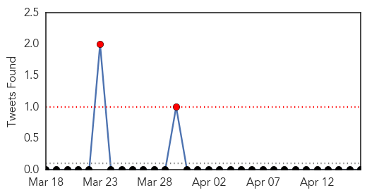

30 Day Trends
Web: 0 alerts, 0 warnings
Twitter: 2 alerts, 0 warnings
Top Articles:
- 0.989
- Disney-linked measles outbreak nears end in California
- 0.960
- Measles Confirmed in Florida
- 0.954
- Measles outbreak linked to Disneyland may be officially over
- 0.939
- Measles case confirmed in St. Lucie County
- 0.932
- Auckland measles case sparks alert
- 0.898
- Inhaled Measles Vaccine Falls Short of Injected Version in Study
- 0.868
- California Measles Outbreak That Began In Disneyland Now Over, Health Officials Said
- 0.855
- Confirmed measles case
- 0.845
- California should remove vaccine exemptions
- 0.829
- Measles case confirmed in Florida as California outbreak winds down
- 0.808
- California vaccination bill stalls after pushback over strict requirements
- 0.774
- Measles case confirmed in St. Lucie County in unvaccinated student
- 0.771
- Measles warning for Auckland
- 0.681
- 6-year-old Florida child confirmed to have Measles
- 0.548
- New case of measles in Auckland
- 0.544
- Health officials confirm measles case in unvaccinated child in Florida
Top Tweets:
-
No tweets found for Apr 16, 2015
Web/News Articles
Tweets
Article Locations